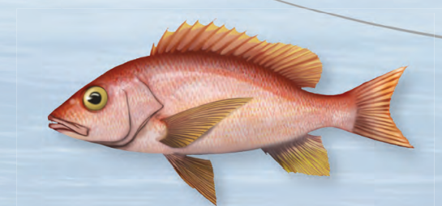

Blue Marlin

Información:
- Pesca comercial- se prohíbe la venta de peces capturados localmente.
- Pesca recreativa- permitida su captura de un tamaño mínimo 66 pulgadas.
- Tamaño- puede medir de 9 a 16 pies.
- Características- cuerpo alargado, color azul oscuro en el dorso y plateado en el vientre
Dorado

Información:
- Pesca comercial- no tiene restricciones.
- Pesca recreativa- 5 por pescador por dia y 10 por embarcación por dia.
- Tamaño- puede medir de 3 a 6 pies.
- Características- color plateado brillante, amarillo, verde amarillento, manchas azul y aleta dorsal larga continua.
Róbalo

Información:
- Pesca comercial- tamaño mínimo 22in, tamaño máximo 38in.
- Pesca recreativa- tamaño mínimo 22in, tamaño máximo 38in.
- Tamaño- puede medir hasta 4'6" pies.
- Características- cuerpo alargado, color plateado brillante y linea lateral negra.
Sábalo

Información:
- Pesca comercial- prohibida su captura y venta.
- Pesca recreativa- prohibido retenerlo solo de permite la pesca recreativa donde se libere luego de su captura.
- Tamaño- puede llegar a medir 8 pies.
- Características- la boca abre de manera dorsal, color plateado brillante.
Chapín panal
Información:
- Pesca comercial- tamaño mínimo 7 pulgadas.
- Pesca recreativa- tamaño mínimo 7 pulgadas.
- Tamaño- tamaño máximo 18 pulgadas
- Características- protegido por un armazón óseo triangular, Patrón de hexágonos delineados por líneas oscuras (centro y área entre hexágonos pálidas). Tonalidad púrpura en los lados y el vientre.
Chillo ojo amarillo

Información:
- Pesca comercial- 1 de octubre 31 de diciembre.
- Pesca recreativa- 1 de octubre 31 de diciembre.
- Tamaño- pueden llegar a medir de 1 a 2'7" pies.
- Características- cuerpo alargado, completamente rosado rojizo, blancuzco en parte ventral, Ojo amarillo brillante y Aletas rojas o amarillo pálido.